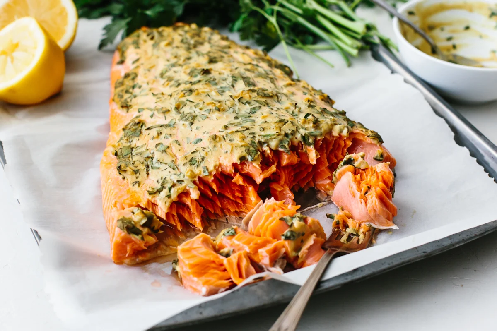

Baked Dijon Salmon

Description:
Baked Dijon Salmon is a savory seafood dish that is typically prepared in the oven. The salmon fillets are coated with a mixture of Dijon mustard, honey, and melted butter, which gives them a rich and tangy flavor.
A topping made from bread crumbs, pecans, and parsley is then sprinkled over the fillets, adding a crunchy texture to the dish. Once assembled, the salmon is baked until it is cooked through and flakes easily with a fork.
The finished dish is typically served with a garnish of lemon wedges and is a flavorful and healthy choice for seafood lovers.
Ingridents:
- ¼ cup butter, melted
- 3 tablespoons Dijon mustard
- 1 ½ tablespoons honey
- ¼ cup dry bread crumbs
- ¼ cup finely chopped pecans
- 4 teaspoons chopped fresh parsley
- 4 (4 ounce) fillets salmon
- salt and pepper to taste
- 1 lemon, for garnish
Steps:
- Preheat the oven to 400 degrees F (200 degrees C).
- Stir together butter, mustard, and honey in a small bowl.
Set aside. Mix together bread crumbs, pecans, and parsley in another bowl
- Brush each salmon fillet lightly with honey mustard mixture,
and sprinkle the tops of fillets with bread crumb mixture.
- Bake salmon in the preheated oven until it flakes easily with a fork, 12 to 15 minutes.
Season with salt and pepper, and garnish with a wedge of lemon.
Other Links: